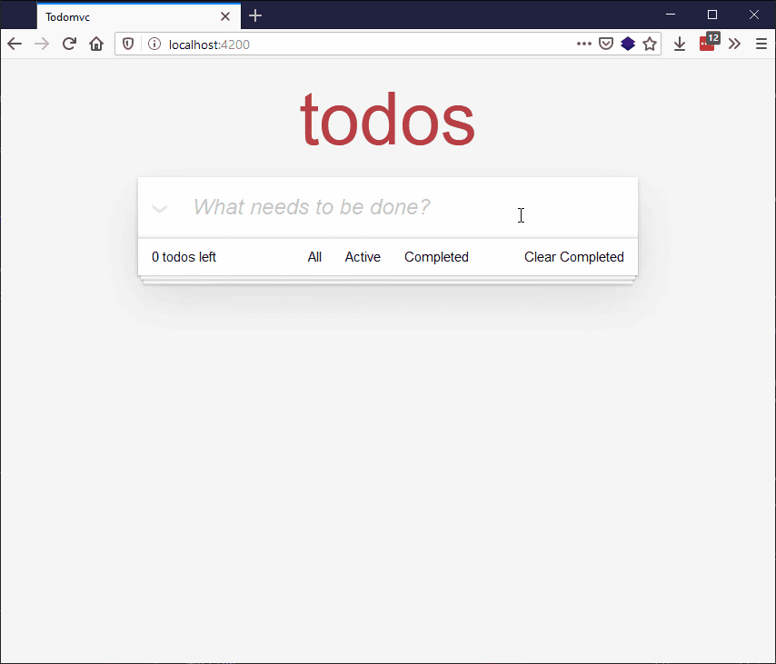

Now it's time to start tackling the footer functionality in our app. Here we'll get the todo counter to update to show the correct number of todos still to complete, and correctly apply styling to completed todos (i.e. where the checkbox has been checked). We'll also wire up our "Clear completed" button. Along the way, we'll learn about using conditional rendering in our templates.
| Prerequisites: |
At minimum, it is recommended that you are familiar with the core HTML, CSS, and JavaScript languages, and have knowledge of the terminal/command line. A deeper understanding of modern JavaScript features (such as classes, modules, etc), will be extremely beneficial, as Ember makes heavy use of them. |
|---|---|
| Objective: | To continue our learning about components classes, start looking at conditional rendering, and wire up some of our footer functionality. |
To get the footer working, we need to implement the following three areas of functionality:
Because we need access to our service from the footer component, we need to generate a class for the footer. Enter the following terminal command to do so:
ember generate component-class footer
Next, go and find the newly-created todomvc/app/components/footer.js file and update it to the following:
import Component from '@glimmer/component';
import { inject as service } from '@ember/service';
export default class FooterComponent extends Component {
@service('todo-data') todos;
}
Now we need to go back to our todo-data.js file and add some functionality that will allow us to return the number of incomplete todos (useful for showing how many are left), and clear the completed todos out of the list (which is what the “Clear completed” functionality needs).
In todo-data.js, add the following getter underneath the existing all() getter to define what the incomplete todos actually are:
get incomplete() {
return this.todos.filter(todo => {
return todo.isCompleted === false;
});
}
Using array.filter(), we declare that "incomplete" todos are ones that have isCompleted equal to false.
Next, add the following action underneath the existing add(text) action:
@action
clearCompleted() {
this.todos = this.incomplete;
}
This is rather nice for clearing the todos — we just need to set the todos array to equal the list of incomplete todos.
Finally, we need to make use of this new functionality in our footer.hbs template. Go to this file now.
First of all, replace this line:
<strong>0</strong> todos left
With this, which populates the incomplete number with the length of the incomplete array:
<strong>\{{this.todos.incomplete.length}}</strong> todos left
Next, replace this:
<button type="button" class="clear-completed">
With this:
<button type="button" class="clear-completed" \{{on 'click' this.todos.clearCompleted}}>
So now when the button is clicked, the clearCompleted() action we added earlier is run.
However, if you try to click the "Clear Completed" button now, it won't appear to do anything, because there is currently no way to "complete" a todo. We need to wire up the todo.hbs template to the service, so that checking the relevant checkbox changes the state of each todo. We'll do that next.
The above is fine, but we have another small issue to contend with. The "todos left" indicator always says "x todos left", even when there is only one todo left, which is bad grammar!
To fix this, we need to update this part of the template to include some conditional rendering. In ember, you can conditionally render parts of the template using conditional content; a simple block example looks something like this:
\{{#if this.thingIsTrue}}
Content for the block form of "if"
\{{/if}}
So let's try replacing this part of footer.hbs:
<strong>\{{this.todos.incomplete.length}}</strong> todos left
with the following:
<strong>\{{this.todos.incomplete.length}}</strong>
\{{#if this.todos.incomplete.length === 1}}
todo
\{{else}}
todos
\{{/if}}
left
This will give us an error, however — in Ember, these simple if statements can currently only test for a truthy/falsy value, not a more complex expression such as a comparison. To fix this, we'll have to add a getter to todo-data.js to return the result of this.incomplete.length === 1, and then call that in our template.
Add the following new getter to todo-data.js, just below the existing getters. Note that here we need this.incomplete.length, not this.todos.incomplete.length, because we are doing this inside the service, where the incomplete() getter is available directly (in the template, the contents of the service has been made available as todos via the @service('todo-data') todos; line inside the footer class, hence it being this.todos.incomplete.length there).
get todoCountIsOne() {
return this.incomplete.length === 1;
}
Then go back over to footer.hbs and update the previous template section we edited to the following:
<strong>\{{this.todos.incomplete.length}}</strong>
\{{#if this.todos.todoCountIsOne}}
todo
\{{else}}
todos
\{{/if}}
left
Now save and test, and you'll see the correct pluralization used when you only have one todo item present!
Note that this is the block form of if in ember; you could also use the inline form:
\{{if this.todos.todoCountIsOne "todo" "todos"}}
As with the other components, we need a class to access the service.
Run the following command in your terminal:
ember generate component-class todo
Now go to the newly-created todomvc/app/components/todo.js file and update the contents to look like so, to give the todo component access to the service:
import Component from '@glimmer/component';
import { inject as service } from '@ember/service';
export default class TodoComponent extends Component {
@service('todo-data') todos;
}
Next, go back again to our todo-data.js service file and add the following action just below the previous ones, which will allow us to toggle a completion state for each todo:
@action
toggleCompletion(todo) {
todo.isCompleted = !todo.isCompleted;
}
Finally, we will edit the todo.hbs template such that the checkbox's value is now bound to the isCompleted property on the todo, and so that on change, the toggleCompletion() method on the todo service is invoked.
In todo.hbs, first find the following line:
<li>
And replace it with this — you'll notice that here we're using some more conditional content to add the class value if appropriate:
<li class="\{{ if @todo.isCompleted 'completed' }}">
Next, find the following line:
<input aria-label="Toggle the completion of this todo" class="toggle" type="checkbox" >
And replace it with this:
<input
class="toggle"
type="checkbox"
aria-label="Toggle the completion of this todo"
checked=\{{ @todo.isCompleted }}
\{{ on 'change' (fn this.todos.toggleCompletion @todo) }}
>
Note: The above snippet uses a new Ember-specific keyword — fn. fn allows for partial application, which is similar to bind, but it never changes the invocation context; this is equivalent to using bind with a null first argument.
Try restarting the dev server and going to localhost:4200 again, and you'll now see that we have a fully-operational battlestation “todos left” counter and Clear button:

If you're asking yourself why we're not just doing the toggle on the component, since the function is entirely self-contained and not at all needing anything from the service, then you are 100% right to ask that question! However, because *eventually*, we'll want to persist or sync all changes to the todos list to local storage (see the final version of the app), it makes sense to have all persistent-state-changing operations be in the same place.
That's enough for now. At this point, not only can we mark todos as complete, but we can clear them as well. Now the only thing left to wire up the footer are the three filtering links: "All", "Active", and "Completed". We'll do that in the next article, using Routing.
{{PreviousMenuNext("Learn/Tools_and_testing/Client-side_JavaScript_frameworks/Ember_interactivity_events_state","Learn/Tools_and_testing/Client-side_JavaScript_frameworks/Ember_routing", "Learn/Tools_and_testing/Client-side_JavaScript_frameworks")}}